제가 만든 강의 화면 먼저 보기
5분강의 화면이 수업에서 어떻게 쓰이는지 먼저 넘겨 보겠습니다!
빈칸 번호가 학습지와 같습니다
번호 배지가 붙은 빈칸이 누를 때마다 하나씩 열리고, 학생들은 학습지의 같은 번호 칸에 받아 적습니다.
직렬연결에서 전류의 세기는 어디서나 ①.
전체 전압은 각 저항에 걸린 전압의 ②이다.
병렬연결에서 각 저항에 걸린 전압은 전원의 전압과 ③.
직렬 · 전류는 어디서나 ①같다
전체 전압 = 각 전압의 ②합
병렬 · 각 전압은 전원 전압과 ③같다
화면에서 ① 칸이 열리면 학생은 학습지의 ① 칸에 적습니다. 번호가 같아서 따로 안내하지 않아도 됩니다.
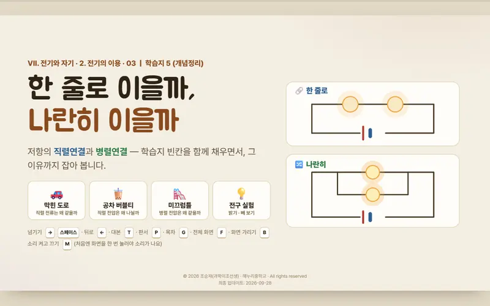
직렬·병렬중2 · 22장 · 빈칸 24개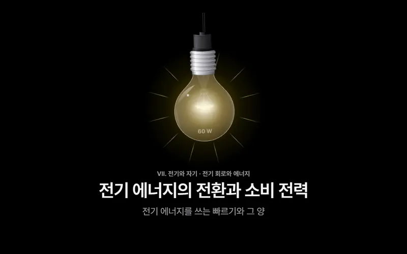
소비 전력중2 · 31장 · 빈칸 26개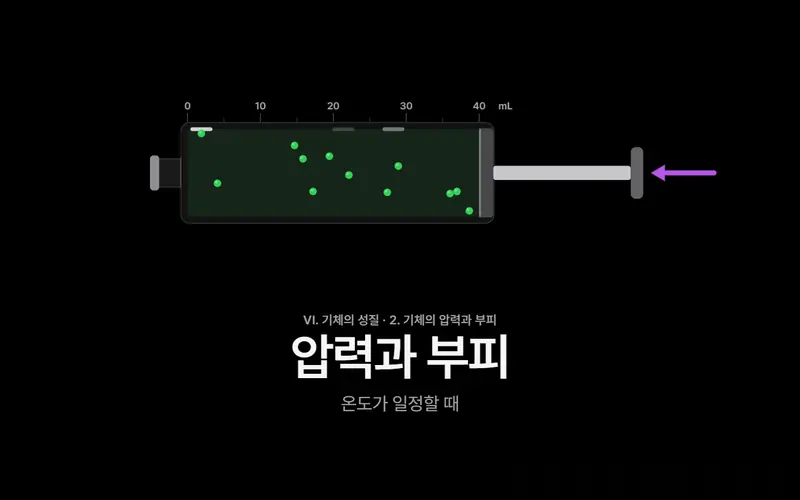
기체의 압력 세 벌중1 · 9~13장씩 · 빈칸 48개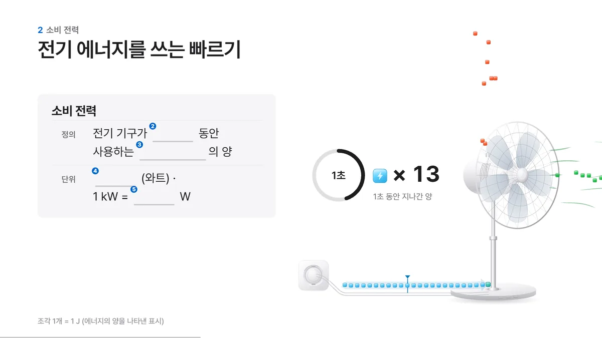
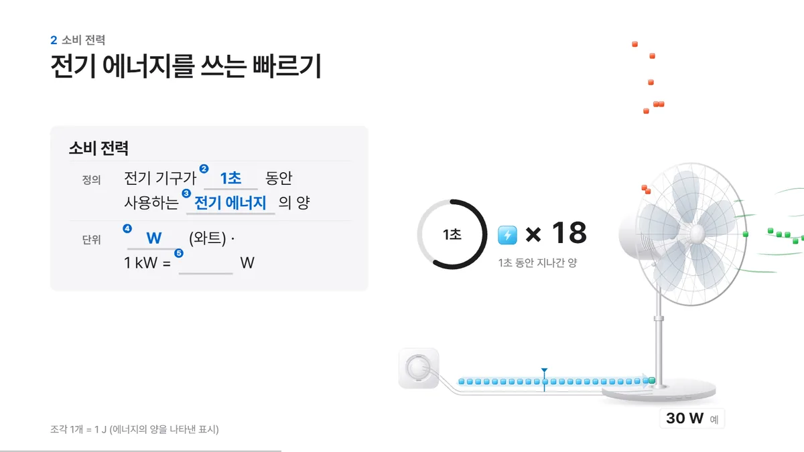
첫 장면에서 "번호가 붙은 칸이 열리면 학습지의 그 번호 칸에 적는다"고 한 번만 알려 주면, 그다음부터는 화면을 넘기는 것만으로 학습지가 채워집니다. 빈칸 옆에서는 비유나 시뮬레이션이 함께 움직여서, 학생들이 정답을 받아 적기 전에 왜 그런지를 먼저 봅니다.
PPT로 만들 때와 다른 점
지나가는 입자 수를 세거나, 흐르는 빠르기를 식대로 맞추는 일은 손으로 그리는 것보다 코드가 잘합니다.
T 키를 누르면 그 장면에서 제가 할 말이 화면 아래에 열립니다.
주소 끝에 ?s=1을 붙이면 대본이 숨은 학생용 판이 됩니다.
빈칸 번호와 정답을 맞추는 과정이 그대로 학습지 점검이 됩니다.
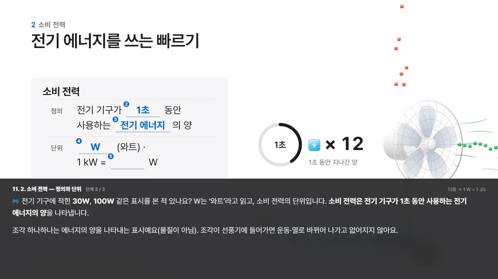
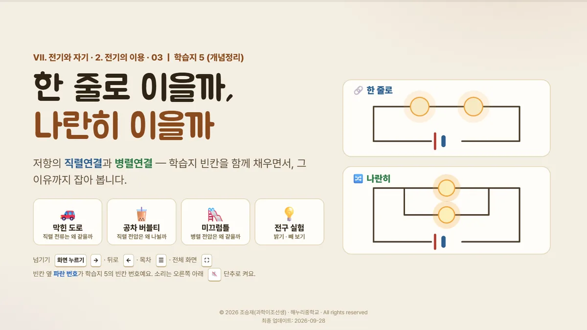
만든 방식은 단순합니다
제 설명 순서, 학습지, 디자인 설계서. 이 세 가지를 AI에게 넣었습니다.
한 번에 다 만들게 하지 않고, 빈칸 지도와 장면 목록을 먼저 받아 확인한 뒤에 만듭니다.
강의 화면을 만들 때 저는 평소 수업에서 하는 설명을 순서대로 적은 대본과, 빈칸이 있는 개념정리 학습지, 그리고 디자인 서랍의 apple 설계서를 AI에게 주었습니다. 이 매뉴얼은 그 과정을 네 번의 부탁으로 나눈 것입니다. 한 번에 "강의 화면 만들어 줘"라고 하면 빈칸이 빠지거나 순서가 뒤섞이기 쉬워서, 빈칸 지도와 장면 목록을 먼저 받아 확인한 다음에 만듭니다.
링크 하나와 두 마디로 시작하신 선생님
전북의 한 초등 선생님께서 제 소비 전력 강의 화면 링크를 Claude 앱 Code 탭에 넣고 두 마디를 보내셨더니, 엔진과 규칙, 샘플 세 장이 나왔다고 알려 주셨습니다.
이 페이지를 분석해줘. 이와 비슷한 페이지를 만들려면 어떻게 해야하지?
- 1920×1080 고정 무대를 화면에 맞춰 키우고 줄임
- 면 색으로 장을 나누고 강조색은 파랑 하나, 에너지마다 정해진 색
- 장면 = 들어올 때 저절로 + 누를 때마다 한 단계, 되돌리면 처음 상태에서 순간 재생
- 그림은 SVG 부품, 장면 파일을 빌드로 한 파일에 합침
- 대본(N) · 전체 보기(O) · 전체 화면(F) · 소리(M) · 학생 모드
core.js · core.css), 그림 부품(objects.js), 규칙(DESIGN.md), 사용법과 12장 장면 목록(README.md), 빌드(build.js)를 만들고 표지 · 적층 제조 · FFF 방식 세 장을 3d-printer-lecture.html(37KB) 한 파일로 합쳤습니다. 브라우저로 넘겨 보다가 필라멘트 곡선이 제목을 가리는 것을 찾아 스스로 고쳤습니다.사례를 나눠 주신 선생님 · 보고 '복잡하겠지' 생각하고 지나치는 선생님들 계실까봐 말씀드려봐요.
두 마디로 된 것은 폴더에서 일하는 AI가 링크의 원본 HTML(580KB)을 폴더에 통째로 내려받아 CSS와 JavaScript 코드까지 읽었기 때문입니다. 같은 링크를 웹 채팅이 링크를 읽는 방식으로 열어 보니 화면 글자 9,000자 정도만 보이고 엔진 코드는 하나도 보이지 않았습니다.
그래서 이 방법은 폴더에서 일하는 앱에서 쓰고, 웹 채팅에서는 제 강의 화면의 규칙을 정리한 «강의화면 설계서»를 학습지와 함께 첨부합니다. 엔진을 새로 만드는 방법이라 제 화면과 똑같이 나오지는 않고, 같은 폴더에서 이어 만들면 그 엔진 하나로 여러 차시를 만들 수 있습니다.
계정에 따라 시작이 다릅니다
폴더에서 일하는 앱은 본보기 링크로 엔진부터 만들고, 웹 채팅은 강의화면 설계서를 붙여 네 번 부탁합니다.
Claude 앱의 Code 탭(Pro 이상)이나 ChatGPT 데스크톱 앱의 Codex(무료 계정도 조금 됩니다)에서 씁니다. 2단계 끝의 두 부탁으로 엔진 · 규칙 · 샘플 세 장을 만든 뒤 3단계부터 내 학습지로 이어 갑니다.
ChatGPT · Claude · Gemini 웹과 SenGPT, 크롬북 · 웨일북에서는 이쪽으로 갑니다. 2단계에서 강의화면 설계서를 받아 학습지와 함께 첨부하고 3단계부터 갑니다. 장면은 10~12장으로 줄여 만듭니다.
| 회사 | 무료 계정으로 되는 것 | 링크로 시작(앱) |
|---|---|---|
| Claude | 웹 채팅 · 아티팩트 · 링크 읽기는 됩니다. 링크 읽기로는 화면 글자 위주로 들어와 엔진 코드까지 보기 어렵고, 긴 페이지를 읽히면 무료 사용량이 크게 줄어듭니다.Code 탭(Claude Code)은 Pro 이상부터 | Pro($20/월)의 Code 탭 |
| ChatGPT | Windows · macOS용 ChatGPT 데스크톱 앱의 Codex는 무료 계정도 가벼운 모델로 조금 쓸 수 있습니다. 웹 채팅은 파일 첨부가 하루 3개이고 한 번에 읽는 양이 작아서 580KB 파일을 통째로 읽기 어렵습니다.크롬북 · 웨일북에는 데스크톱 앱이 없습니다 | 무료도 데스크톱 앱 Codex로 시도할 수 있고, 넉넉히 쓰려면 Plus(₩29,000/월) |
| Gemini | 웹 채팅의 캔버스는 무료로 됩니다. 무료 계정은 한 번에 읽는 양(32k 토큰)이 작아서 580KB 파일을 통째로 읽지 못합니다.통째로 읽으려면 Google AI Pro(₩29,000/월) | 준비 중구글의 폴더 앱(Antigravity)은 무료로 주간 한도만큼 쓸 수 있다고 안내되어 있지만, 제가 아직 써 보지 않았습니다 |
2026-10-01에 각 회사 요금표와 도움말을 확인해 적었습니다. 무료 한도는 숫자가 공개되어 있지 않아서 연수 중에 한도에 걸릴 수 있습니다.
재료 네 가지를 한 폴더에
8분학습지, 설명 순서, 디자인 설계서, 강의화면 설계서를 강의화면 폴더에 모아보겠습니다!
준비물
빈칸이 있는 개념정리 학습지 한 장. 정답이 보이는 교사용이면 가장 좋습니다. PDF로 저장합니다.
이 차시에서 평소 하는 말을 순서대로 적은 메모. 학생에게 던지는 질문도 그대로 적습니다.
디자인 서랍에서 고른 DESIGN.md 한 장. 제 강의 화면은 apple 설계서를 썼습니다.
제 강의 화면의 넘기기 · 빈칸 번호 · 면 색 · 소리 · 대본 · 학생 복습판 규칙을 12절로 정리한 파일입니다. 강의화면_설계서.md 받기
꼭 움직여 보여 주고 싶은 장면이나 비유 하나. 저는 버블티 빨대로 저항을 설명합니다.
- 바탕화면에 강의화면 폴더 만들기바탕화면 빈 곳 오른쪽 클릭 → [새로 만들기] → [폴더] → 이름 강의화면
- 학습지를 PDF로 저장해 폴더에 넣기한글에서 [파일] → [PDF로 저장하기]. 종이뿐이면 휴대폰으로 반듯하게 찍은 사진도 됩니다
- 설명 순서를 메모장에 적어 대본.txt로 저장하기한 줄에 이야기 하나. 적기 번거로우면 말로 녹음해 글자로 바꾼 것도 됩니다
- 디자인 서랍에서 DESIGN.md를 받아 폴더에 넣기디자인 서랍 → 카드의 [DESIGN.md 받기] → 강의화면 폴더로 옮기기
- 강의화면 설계서를 받아 폴더에 넣기위 4번 칸의 강의화면_설계서.md 받기 → 다운로드 폴더에서 강의화면 폴더로 옮기기
- 앱앱에서 강의화면 폴더 열기Codex는 [폴더 추가], Claude 앱은 Code 탭의 [Select folder]로 강의화면 폴더를 고릅니다
- 웹 채팅새 채팅을 열고 이 대화 하나로 끝까지 가기빈칸 지도와 장면 목록이 같은 대화 안에 있어야 3단계부터 이어집니다
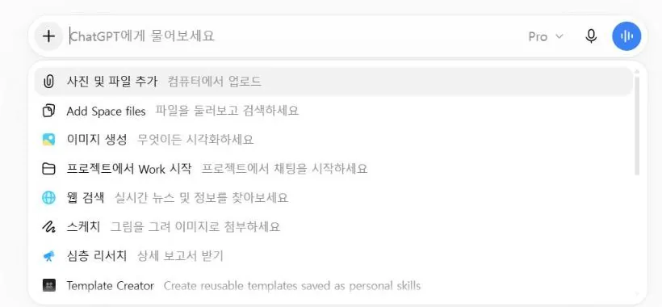
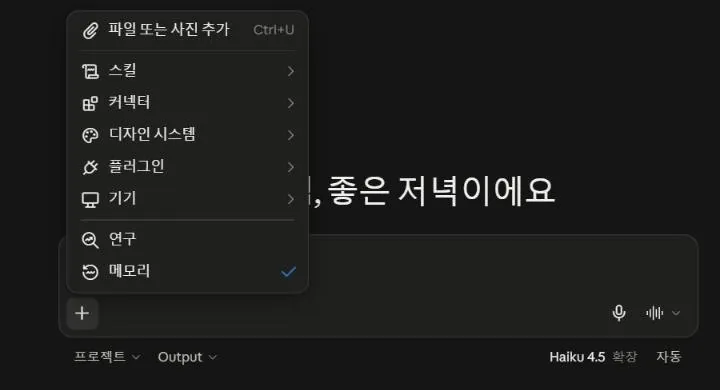
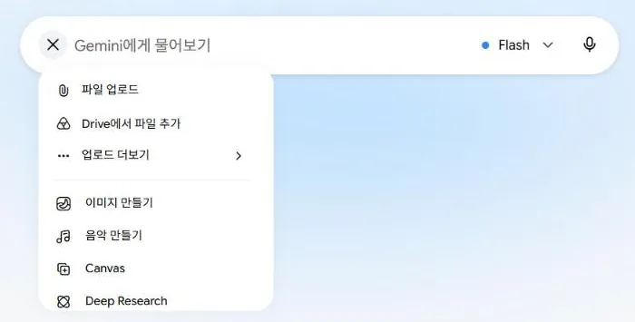
한글(HWP) 파일은 AI가 제대로 읽지 못하는 경우가 많아서 PDF로 바꿔 넣습니다. 학습지 스튜디오로 만든 학습지라면 학습지 파일(JSON)을 그대로 넣어도 됩니다. 빈칸이 따로 표시되어 있어서 번호와 정답이 정확하게 들어갑니다.
웹 채팅은 부탁문을 보낼 때 입력칸의 첨부 버튼으로 학습지 PDF와 강의화면 설계서를 함께 올리고, 대본은 입력칸에 붙여넣습니다. 무료 계정은 첨부할 수 있는 횟수와 한 번에 받을 수 있는 코드 길이가 작아서, 장면 수를 10장 안팎으로 줄여 만듭니다. 첨부할 수 있는 파일 수가 모자라면 DESIGN.md는 빼고 강의화면 설계서를 남깁니다.
막혔을 때
한글에 PDF로 저장하기가 보이지 않습니다. [인쇄]를 누르고 프린터를 Microsoft Print to PDF로 고르면 PDF 파일로 저장됩니다.
학습지가 두 쪽입니다. 두 쪽을 한 PDF로 저장해 넣습니다. 쪽마다 따로 저장해도 괜찮습니다.
정답이 적힌 교사용이 없습니다. 학생용만 넣어도 됩니다. 3단계에서 AI가 정답을 추측해 채우면, 그 칸만 직접 확인해 고칩니다.
앱본보기 링크로 엔진부터 만들기
강의화면 폴더를 연 앱에서 두 번 부탁하면 엔진 · 규칙 · 샘플 세 장이 폴더에 생깁니다. 3단계부터는 그 엔진으로 내 학습지 장면을 만듭니다.
- 분석 답에서 무대 · 엔진 · 그림 부품 이야기가 나오는지 보기화면 글자 이야기만 있으면 «원본 HTML을 내려받아 코드까지 읽어 줘»를 다시 보냅니다
- 샘플 세 장을 열어 → 로 넘기고 ← 로 되돌아와 보기폴더에 생긴 html 파일을 더블클릭합니다
- 3단계 부탁 ①로 넘어가기샘플 세 장은 나중에 지우거나 표지로 바꿔 씁니다
본보기 링크는 제 소비 전력 강의 화면의 나눔본입니다. 직렬 · 병렬이나 기체의 압력 강의 화면 링크를 넣어도 됩니다. 사례 선생님은 이 두 부탁에서 괄호 줄 없이 두 마디만 보내셨고, 저는 웹 채팅처럼 화면 글자만 읽고 끝나는 일이 없게 괄호 줄을 붙여 두었습니다.
ChatGPT 앱의 Codex는 처음에 인터넷을 쓰지 않는 상태로 일해서, 페이지를 내려받을 때 허락을 묻습니다. 그때 [승인]을 누릅니다. 무료 계정은 가벼운 모델로 조금만 쓸 수 있고 한도가 공개되어 있지 않아서, 엔진을 만들다 멈추면 시간이 지난 뒤 이어 가거나 Plus로 올립니다.
빈칸 지도 받기
10분학습지 빈칸에 위에서부터 번호를 매기고, 정답까지 표로 받아 확인해보겠습니다!
템플릿몇 칸만 채우면 아래 부탁 네 개에 저절로 들어갑니다
부탁 ①빈칸 지도
학습지를 붙여(첨부해) 함께 보냅니다. 코드는 아직 받지 않습니다.
- 빈칸 개수가 학습지와 같은지 보기AI가 마지막에 센 개수와 학습지의 빈칸 수를 맞춰 봅니다
- 번호 순서가 인쇄된 학습지와 같은지 보기두 단으로 된 쪽, 표 안의 빈칸에서 순서가 잘 뒤바뀝니다
- 정답이 한 글자도 다르지 않은지 보기띄어쓰기와 단위까지. (추측) 표시가 붙은 칸은 직접 고칩니다
- 고친 곳이 있으면 AI에게 알려 주기아래 카드를 복사해 고친 줄만 적어 보냅니다
빈칸 지도는 강의 화면의 설계도라서, 인쇄된 학습지 옆에 두고 번호와 정답을 한 줄씩 맞춰 봅니다. 소비 전력 강의 화면을 만들 때는 이 단계에서 학습지에 적힌 숫자 하나가 계산과 맞지 않는다는 것이 드러나기도 했습니다. 강의 화면을 만들다 보면 학습지까지 한 번 더 다듬어집니다.
장면 목록 짜기
10분빈칸 지도와 설명 순서로 강의 화면의 장면 목록을 짜 보겠습니다!
장면의 뼈대
처음과 끝을 같은 질문으로 묶고, 가운데에 빈칸이 열리는 장면을 학습지 순서대로 놓습니다.
부탁 ②장면 목록
대본을 함께 보냅니다. 앱을 쓰시면 폴더의 대본.txt를 읽으라고 적혀 있습니다.
- 빈칸 번호가 빠짐없이 한 번씩 나오는지 보기표의 빈칸 번호 칸을 위에서부터 읽어 내려갑니다
- 장면 수가 수업 시간에 맞는지 보기45분 수업이면 20~30장이 알맞습니다
- 움직임이 과하지 않은지 보기장면마다 하나까지. 없어도 되는 장면이 더 많습니다
- '내가 할 말'이 내 말투인지 보기다르면 "내가 할 말을 대본 그대로 옮겨 줘"라고 보냅니다
처음 설계를 크게 잡으면 한 차시 자료가 영상 제작이 되어 버립니다. 제 소비 전력 강의 화면도 처음 설계에는 움직이는 효과가 스물다섯 가지나 들어 있어서, 장면마다 움직임 하나 정도로 줄였습니다. 한 차시에는 20~30장, 장면마다 움직임 하나면 충분합니다.
강의 화면 만들기
15분장면 목록대로 강의 화면을 받아, 처음부터 끝까지 넘겨 보겠습니다!
부탁 ③만들기
웹 채팅설계서는 파일로 첨부하거나, 디자인 서랍 카드의 [짧은 판 복사]로 부탁문 아래에 붙여넣습니다.
- 부탁문을 보내고 되묻는 질문에 짧게 답하기잘 모르겠으면 "네가 정해 줘"
- 앱다 됐다고 하면 index.html 열기강의화면 폴더에서 index.html 더블클릭
- 웹 채팅코드가 </html>까지 나오면 아래 코드 도우미로 저장하기복사 → 코드 도우미 칸에 붙여넣기 → [미리보기] → [index.html로 저장] → 강의화면 폴더
- → 키로 처음부터 끝까지 넘겨 보기T 키로 대본, F 키로 전체 화면도 확인합니다
웹 채팅코드 도우미
설명이 섞인 답을 통째로 붙여넣어도 코드만 골라 미리 보여 주고, 파일로 저장합니다.
붙여넣은 내용은 선생님 컴퓨터 안에서만 처리되고 어디로도 보내지 않습니다. 코드가 중간에 끊겼다면 "끊긴 곳부터가 아니라, 장면을 줄여서 처음부터 끝까지 다시 써 줘"라고 보냅니다.
처음 결과는 끝까지 넘어가기만 하면 됩니다
어설픈 장면은 6단계에서 장면 번호를 불러 하나씩 고칩니다.
한 번에 완성본이 나오는 경우는 거의 없습니다. 초안은 금방 나오고, 시간은 대부분 고치는 데 들어갑니다. 첫 결과가 처음부터 끝까지 넘어가고 빈칸이 열리기만 하면 다음 단계로 넘어갑니다.
막혔을 때
하얀 화면만 나옵니다. "하얀 화면만 나와. 원인을 찾아서 고쳐 줘"라고 보냅니다.
빈칸이 한꺼번에 다 열려 있습니다. "빈칸은 처음에 가려 두고, 누를 때마다 하나씩 열리게 고쳐 줘"라고 보냅니다.
화면이 전자칠판보다 작거나 잘립니다. "창 크기에 맞춰 16:9 비율로 꽉 차게 보여 줘"라고 보냅니다.
빈칸 대조하고 고치기
7분화면에 나온 빈칸을 빈칸 지도와 맞춰 보고, 장면 번호를 불러 하나씩 고쳐보겠습니다!
부탁 ④빈칸 대조
- 처음부터 끝까지 넘기고, ← 키로 거꾸로 돌아와 보기돌아왔을 때 화면이 깨지거나 빈칸이 이상하게 남는지
- 빠르게 여러 번 눌러 보기움직임이 겹치거나 빈칸이 건너뛰어지는지
- 장면 제목에 아직 열리지 않은 정답이 보이는지제목이 정답을 먼저 말해 버리는 실수가 잦습니다
- 단위와 용어가 교과서와 같은지힘은 N, 압력은 N/m²처럼
- 교실 뒷자리에서 글씨가 읽히는지전자칠판에 띄워 교실 맨 뒤에서 봅니다
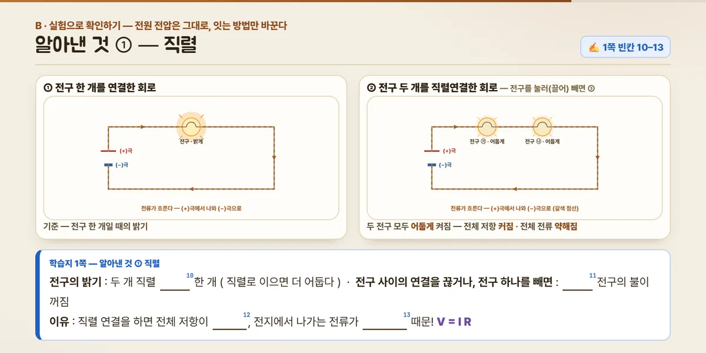
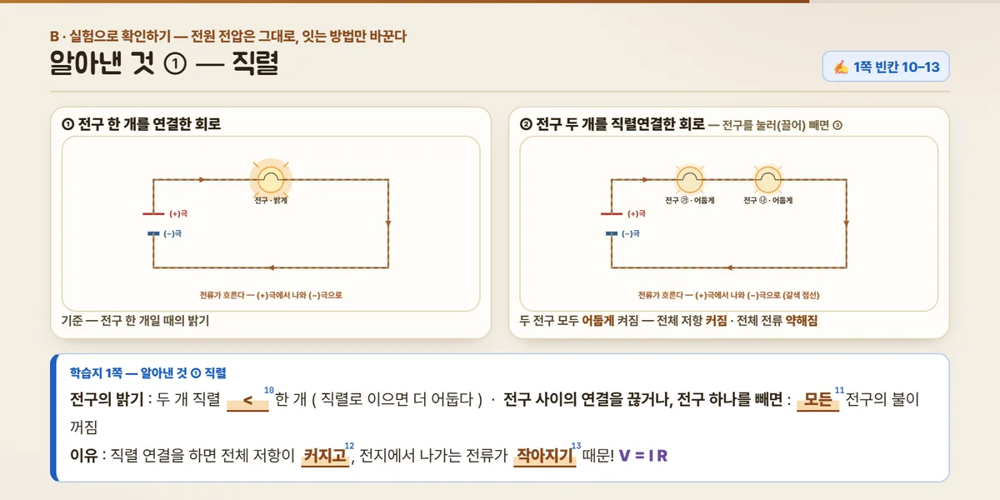
제 기체의 압력 강의 화면도 검토에서 장면 제목에 빈칸 정답이 먼저 적혀 있거나, 힘의 단위가 N이 아니라 g으로 적힌 실수가 나왔습니다. 빈칸 대조를 AI에게 한 번 시키고, 눈으로 한 번 더 넘겨 보면 대부분 잡힙니다.
카드장면 번호를 불러 하나씩 고치기
[ ] 안을 바꿔 보냅니다. 끝에 "다른 장면은 그대로 둬"가 붙어 있습니다.
웹 채팅웹 채팅에서는 카드 뒤에 "고친 코드 전체를 다시 보여 줘"를 붙이고, 받은 답을 코드 도우미로 다시 저장합니다.
칠판에 띄우고 나누기
5분완성한 강의 화면을 수업에 띄우고, 보관함과 학생 복습 링크로 나눠보겠습니다!
수업에서 쓰는 키
| → Space 클릭 | 다음 단계, 다음 장면 |
| ← | 이전 |
| F | 전체 화면 |
| T | 대본 열고 닫기 |
| B P M | 화면 가리기, 판서 펜, 소리 (6단계 카드로 더했다면) |
학생 복습판은 주소 끝에 ?s=1
배포해서 주소가 생기면, 주소 끝에 ?s=1을 붙인 링크를 학생에게 줍니다. 대본이 보이지 않는 판입니다.
저는 학생 입구의 '칠판 다시보기' 방에 이 링크를 걸어 두고, 결석했거나 다시 보고 싶은 학생이 열어 보게 합니다. 주소를 받는 방법은 ② 배포 매뉴얼에서 다룹니다.
보관함에 올려 서로 보기